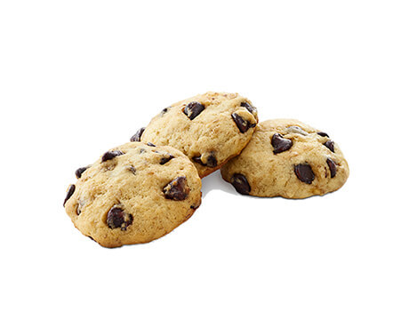

Chocolate Chip Cookies

Ingredients:
- 1 cup (2 sticks) unsalted butter, softened
- 3/4 cup granulated sugar
- 3/4 cup packed brown sugar
- 1 teaspoon vanilla extract
- 2 large eggs
- 2 1/4 cups all-purpose flour
- 1 teaspoon baking soda
- 1/2 teaspoon salt
- 2 cups semisweet chocolate chips
Steps:
- Preheat oven to 375°F (190°C). Line baking sheets with parchment paper.
- In a large mixing bowl, cream together butter, granulated sugar, brown sugar, and vanilla extract until light and fluffy.
- Beat in eggs one at a time.
- In a separate bowl, combine flour, baking soda, and salt. Gradually add to the creamed mixture and mix well.
- Stir in chocolate chips.
- Drop dough by rounded tablespoonfuls onto prepared baking sheets.
- Bake for 9-11 minutes or until golden brown. Allow to cool on baking sheets for 5 minutes before transferring to wire racks to cool completely.